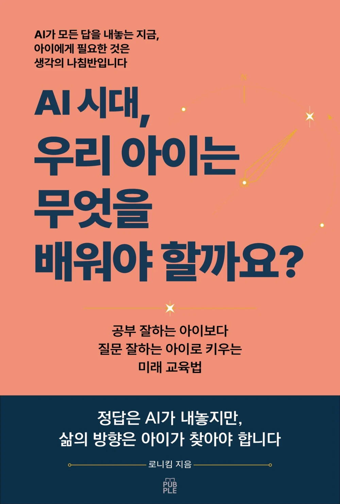

AI 시대 부모 교육 · 미래 교육
정답은 AI가 내놓지만,
삶의 방향은 아이가 찾아야 합니다.
AI가 몇 초 만에 답을 만들고, 긴 글을 요약하고, 숙제와 발표 자료까지 도와주는 시대입니다. 이 책은 그 변화 앞에서 부모가 무엇을 더 시켜야 하는지가 아니라, 아이에게 어떤 판단 기준을 남겨야 하는지를 묻습니다.
세 아이를 키우는 아빠이자 오랫동안 소프트웨어 개발 현장에서 일해 온 저자의 경험을 바탕으로, 질문·읽기·말하기·AI 활용·진로·인간다움을 하나의 기준인 생각의 나침반으로 연결합니다.
AI가 모든 답을 내놓는 지금, 아이에게 필요한 것은 생각의 나침반입니다.
이 책이 답하려는 질문
무엇을 배워야 할까
코딩, 영어, 문해력, AI 활용처럼 모두 중요해 보이는 선택 앞에서 우리 아이에게 지금 필요한 성장을 판단하는 기준을 세웁니다.
AI를 어디까지 허용할까
챗GPT를 언제부터 쓰게 할지, 숙제에 어디까지 활용할지, AI 튜터와 학습 앱을 어떻게 바라볼지 구체적으로 생각합니다.
질문하는 힘은 어떻게 자랄까
정답을 빨리 찾는 것보다 이유를 묻고, 읽고, 자기 말로 설명하며 생각을 만드는 힘을 다룹니다.
변하는 진로를 어떻게 준비할까
사라질 직업을 예측하기보다 변화 속에서도 다시 배우고 선택할 수 있는 방향과 인간다움을 살펴봅니다.
8개 Part, 32개 Chapter
- Part 1. AI 시대, 부모가 흔들리는 이유
- Part 2. 정답보다 먼저 세워야 할 것, 생각의 나침반
- Part 3. 질문하고 읽고 말하는 힘이 나침반을 움직입니다
- Part 4. AI 답변을 믿기 전에 생각의 기준이 필요합니다
- Part 5. AI를 쓰는 아이보다 AI를 이끄는 아이
- Part 6. 진로는 직업이 아니라 방향입니다
- Part 7. 결국 아이를 지키는 것은 인간다움입니다
- Part 8. 부모는 통제자가 아니라 나침반을 쥐여주는 사람입니다
이런 부모에게 권합니다
- 코딩, 영어, 문해력, AI 중 무엇부터 가르쳐야 할지 고민하는 부모
- 아이의 챗GPT·AI 사용 기준을 세우고 싶은 부모
- AI가 공부와 직업을 바꾸는 시대에 교육의 목적을 다시 생각하고 싶은 부모
- 성적뿐 아니라 질문, 판단, 회복탄력성, 공감과 같은 힘을 길러주고 싶은 부모
- 다른 집의 정답보다 우리 아이에게 맞는 기준을 만들고 싶은 부모
도서 정보
| 도서명 | AI 시대, 우리 아이는 무엇을 배워야 할까요? |
|---|---|
| 부제 | 공부 잘하는 아이보다 질문 잘하는 아이로 키우는 미래 교육법 |
| 저자 | 로니킴 |
| 출판사 | 퍼플 |
| 발행일 | 2026년 8월 3일 |
| 쪽수 | 431쪽 |